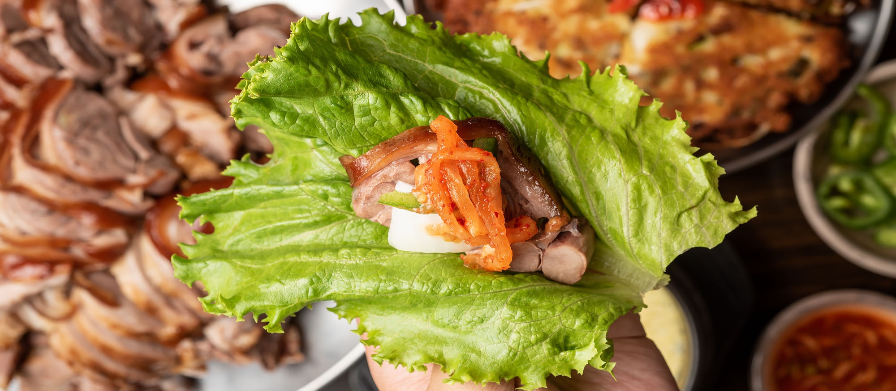
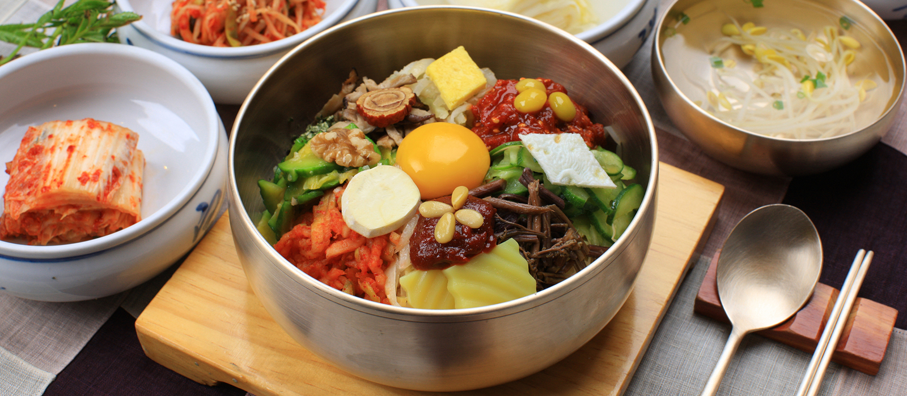

Choice Dishes
Wang Jokbal | 왕족발 | 王猪手
Jokbal is pig’s trotters that have been boiled in a soy sauce-based braising liquid. Cooked and served with fresh lettuce, raw garlic, green peppers, soybean paste and salted fermented shrimp (commonly served with pork dishes in many parts of Korea for its digestive properties) for dipping.
Gamja Tang | 감자탕 | 猪骨干土豆汤
Gamjatang is a spicy Korean pork bone soup. It is made by simmering pork bones for a long time then the strained milky bone broth is seasoned with Korean special condiments such as gochugaru (Korean chili flakes) and gochujang (Korean chili paste).
Bossam | 보쌈 | 熏鸭包肉
Bossam is proof that Koreans do wraps right: each perfectly constructed packet features meltingly tender pork, fermented dipping sauces and pastes, crunchy preserved vegetables, and more, all in a cabbage-leaf wrapper. Similar in look and taste to Jokbal.
Seasonal Special
Cold Soybean Noodle Soup
Noodles with cold soybean broth and cucumber slices
Limited Time Starter
Cod Roe Omelet
Cod roe omelet with green tea mayo.